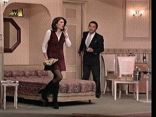

Content-Based Image Retrieval
Introduction
The recent tremendous growth in computer technology has also brought a
substantial increase in the storage of digital imagery.
Examples of applications
can be found in every day life, from museums for archiving
images or manuscripts, to medicine where million of images are generated by
radiologists every year.
Storage of such image data is relatively straightforward,
but accessing and searching image databases is intrinsically
harder than their textual counterparts.
The goal of Content-Based Image Retrieval (CBIR) systems is to operate on
collections of images and, in response to visual queries, extract relevant
image. The application potential of CBIR for fast and effective image
retrieval is enormous, expanding the use of computer technology to a
management tool.
The more realistic approach taken in the early 1990s was to work with
simple low level features instead such as the colour histograms used by
Swain and Ballard.
Since then many more sophisticated methods have been
developed.
However, due to the difficulties involve most practical approaches are still rooted
in low level feature extraction
and description.
Further Investigation of Features and Combinations
The first area of research tackled in the project
covered alternative low level features that
could combine more spatial aspects of the
image than colour histograms, but preferably without requiring object
identification, or even segmentation.
Hue vs Colour Labels
Colour is the most used feature in CBIR.
As an alternative to the standard Hue Saturation Luminosity (HSL) space
the colour space was
partitioned into Berlin and Kay's 11 ``universal'' categories:
i.e. achromatic (Black, White, Gray) and chromatic (Red, Green, Blue, Purple, Orange,
Pink and Brown) labels.
The coarser quantisation and the perceptual categories benefited retrieval.
Multi-resolution Salience Distance Transform
Shape information was introduced using the multi-resolution salience distance
transform applied to edges to generate histograms of distances to edges.
This enables histogram matching to respond differently to different types of
shapes.
Distance transform of colour region boundaries and of intensity edges
Segmentation by Thresholding
Although automatic general segmentation is difficult and unreliable
an approach based on binary thresholding was developed.
Even if the segmented regions do not correspond to high-level objects
in the scene they can still be useful in injecting spatial information
into the histogram description.
Specifically, the two image classes (black and white) defined two masks.
Histograms were computed separately from each area,
and standard histogram based CBIR then applied.
To reduce sensitivity a fuzzified version was implemented.
Local vs. Global Statistics
Another approach
experimented with histogramming the relation between
local statistical image information and the corresponding
global image information.
Thresholding is applied both globally to the image and locally to the
individual windows. Then the percentage difference between the
window and the image content, at the relevant position, is
histogrammed. Additionally, the amount of blackness
found in the window content after thresholding was histogrammed.
Delaunay triangulation

Finally, another method to indirectly
measure shape started with the edge map.
After some tidying up and subsampling the Delaunay triangulation of the edges
was carried out.
is first carried out, to eliminate spurious short edge lists.
The strength of this approach is that connectivity is
used to help filter out noise but nevertheless the triangulation
is not dependent on connectivity and therefore can cope
with edge linking errors.
The following properties of the individual triangles were histogrammed
and used to describe the image structure:
area, aspect ratio, length.
Performance Evaluation / Validation
The second area of interest is performance evaluation.
While many new image features and processing methodologies
are generated in the area of CBIR,
testing those was found to be problematic. Although CBIR
is close to the Information Retrieval (IR) field, the complexity of
image similarity does not allow immediate application of the IR evaluation
/ validation techniques to CBIR. The subjective nature of image similarity
and the dynamic scope of a query makes objective evaluation of CBIR
systems, using simple methods as recall/precision measures, unreliable.
Several approaches to evaluation were investigated.
Visualisation of Results
The image similarity measurements generated by histogram comparison
of the above features was input to the Pathfinder algorithm,
which is a structural modelling technique developed in the field of psychology.
This produced a network in which the data typically displayed clustering.
The results were then rendered in VRML for visual assessment of
the clusters.
In addition, the results were compared against a manual clustering of the
images.
Visualisation of System Parameters
Various schemes for plotting the contents of feature histograms and
image distance matrices while systematically varying internal system parameters
were applied, and distinctive behaviours were identified, leading to insights into
the effectiveness of individual methods and their combinations.
Statistical Analysis
Rather than just record average recall/precision values the distribution
of the values over the queries was investigated.
We have found this to be much more revealing in determining the
system's performance strengths and limitations.
Statistical tests can be applied to check if one algorithm/histogram feature
is significantly better than another.
Initially the Student's t test was considered, but the distributions were
found to be non-normal. Current work applying the non-parametric median test is
underway.
Concept Oriented Image Retrieval
The final area of work
aims to go beyond histograms
and build a higher level image description.
The intention is to investigate how
a high level knowledge-based concept structure can be used to support
high level queries.
A set of images has been hand segmented and labelled.
This is provided as training data, and
using local histograms of the properties
local windows in unseen images are labelled using a neural network.
In addition to local properties, pairwise spatial relationships are
now used to generate an association graph between the image
windows and nodes in a ``concept hierarchy''.
Matches are then found by applying a maximal clique graph algorithm.
This enables searches to be based not just on spatial relationships
but also at different levels in the concept hierarchy.
More details are given in:
-
G. Gagaudakis and P.L. Rosin, "Shape measures for image retrieval", Pattern
Recognition Letters, vol. 24, no. 15, pp. 2711-2721, 2003.
-
G. Gagaudakis and P.L. Rosin, "Incorporating shape into histograms for CBIR",
Pattern Recognition, vol. 35, no. 1, pp. 81-91, 2002.
return to Paul Rosin's homepage